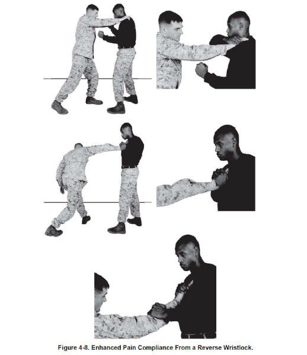
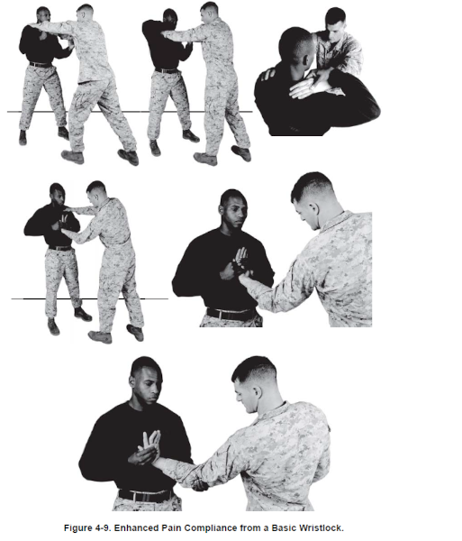
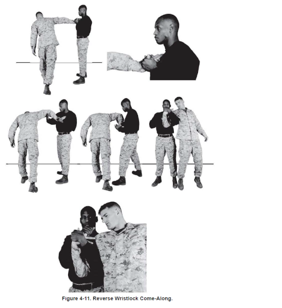
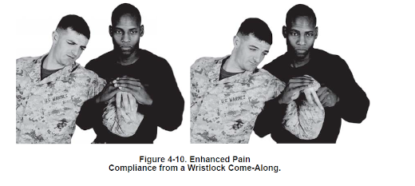
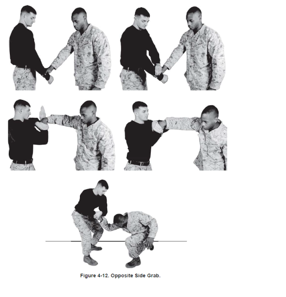
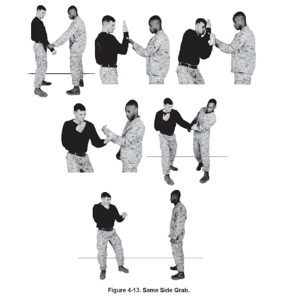

Enhanced Pain Compliance from a Reverse Wristlock
Source:MCMAP
1. Start by executing a reverse wristlock.
2. Maintain control the aggressor’s right hand with your
right hand and use your left hand to push down and apply pressure on the aggressor’s radial nerve.
3. When pressure is added to the radial nerve, do not loosen your right hand’s grip on the reverse
wristlock.
Additional Help Video
Click here
for video
Enhanced Pain Compliance from a Basic
Wristlock
Source:MCMAP
1. Start by executing a basic wristlock.
2. Maintain control the aggressor’s left hand with your right hand and grab his elbow with your left
hand palm up.
3. Apply pressure into the aggressor’s ulna nerve, just above the elbow, with your left thumb.
4. Pull up on the aggressor’s elbow with your left hand and push down on his hand with your right
hand.
Additional Help Video
Click here
for video
Reverse Wristlock Come-Along
Source:MCMAP
1. Start by
executing a reverse wristlock with your right hand.
Continue to rotate the aggressor’s hand until his palm is facing up. Ensure you keep the aggressor’s
hand close to your chest.
2. Grab the meaty portion of the aggressor’s thumb and with your left hand. Grab as much of his palm as
possible.
3. Collapse the aggressor’s right arm by striking and applying pressure to the inner portion of his
elbow with your right hand.
4. At the same time, step outside the aggressor’s right foot with your left foot and pivot to your
right so you are facing the same direction as the aggressors on his right side. Maintain pressure on the
aggressor’s wrist with your left hand.
5. Pull the aggressor’s elbow to your chest with your right hand and bring your left arm high into his
armpit.
6. Place your right hand on top of your left and keep your elbows tight. His fingers should
be pointing towards you.
7. Apply upward pressure with your left arm and downward pressure on the aggressor’s wrist to maintain
control over the aggressor.
Additional Help Video
Click here
for video
Enhanced Pain Compliance from a Wristlock
Come-Along
Source:MCMAP
1. Start by
executing either a basic or reverse wristlock come-along.
2. Maintain control of the aggressor’s hand with your inside hand and lock the aggressor’s elbow with
your forearms.
3. Use your outside hand to bend the fingers away from each other, in opposite directions.
Additional
Help Video
Click here
for video
Opposite Side Grab
Source:MCMAP
1. Begin
with the aggressor grabbing your right wrist with his right hand.
2. Trap the aggressor’s right hand in place on your right wrist with the palm of your left hand.
3. Rotate your right hand clockwise to reach up and grasp the aggressor’s right forearm while
maintaining downward pressure on his trapped right hand with your left hand.
4. Apply pressure in and down with both hands until the aggressor is forced to one knee and is
effectively controlled.
Additional Help Video
Click here
for video
Same Side Grab
Source:MCMAP
1. Begin with the aggressor grabbing your right wrist with his left hand.
2. Rotate your right palm up so your palm is toward your face.
3. Grab the backside of the aggressor’s hand with your right hand, palm up, wrapping the fingers around
the meaty portion of his thumb.
4. Rotate the aggressor’s palm down and outboard until control is achieved.
Additional Help
Video
Click here
for video